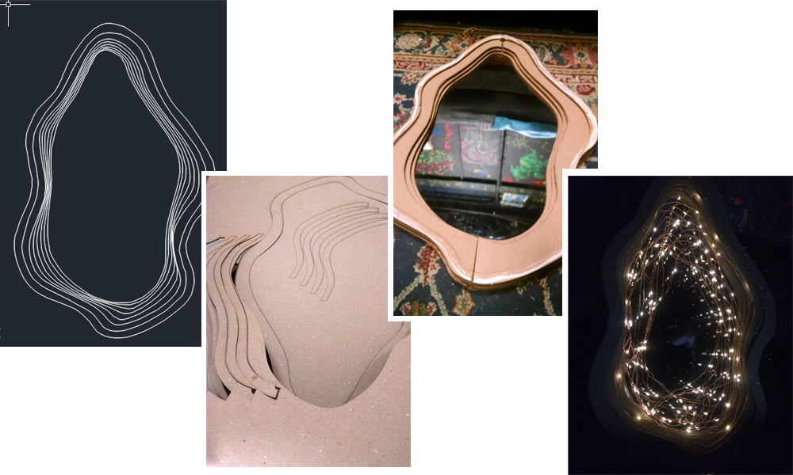
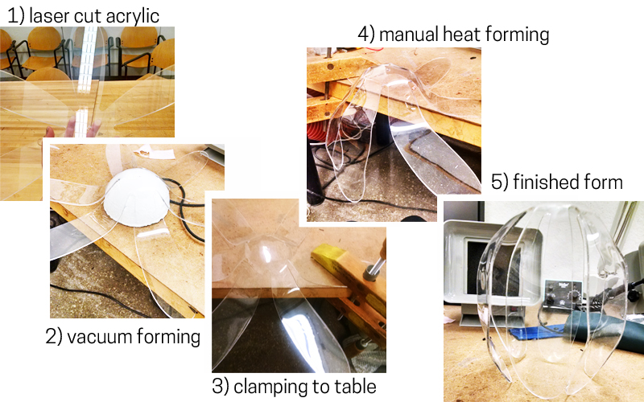
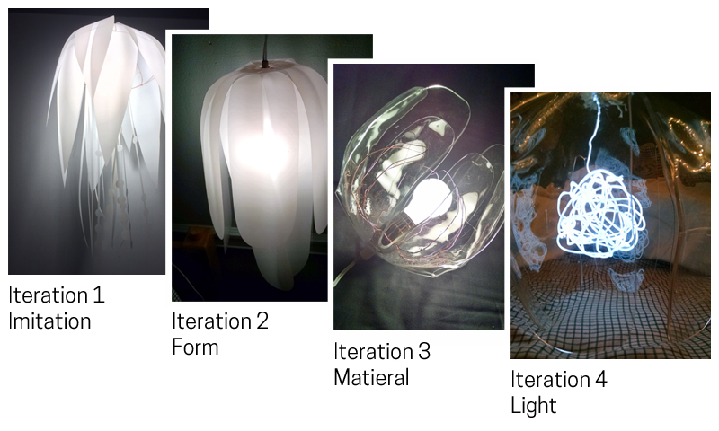

objects + fabrication
things made in 3D - 2015 to present
womb infinity mirror
interactive lighting - spring 2015

done for
4.552 Workshop in Computational Making
tools used
arduino, laser cutter, CAD/Rhino, chipboard, acrylic, LED string lights
For my final project for a lighting design class within MIT Architecture's Design and Computation group, I created a proximity-reactive infinity mirror. Inspired by Yayoi Kusama and other artists that play with the ethereal spacial effects of light and mirrors, I created an infinity mirror revealing a cavernous, womb-like interior speckled with reflecting lights with the effect of opening a mystical space for contemplation and self-reflection.
concepts + mockup + planning
I'm drawn to the interaction between a user and light in an intimate, introspective way. Since yonic imagery is often stigmatized whereas phallic imagery is pervasive and normalized in our culture, I was interested in yonic imagery as a form of visual empowerment by combining the concept of the womb with mystic aesthetics and elegant forms.
I chose to make an infinity mirror because of the "portal"-like imagery it evoked and thought it made sense with the womb as a yonic, tunnel-like space.
(note: I realize that there are concerns of "vagina art" as falling into binary notions of gender, it is something I am thinking about more...)
fabrication + execution
Infinity mirrors involve a shiny, reflective mirror parallel to a transparent glass-like material, with lighting inside that reflects back and forth between these two surfaces, creating an infinity effect. Many versions use these basic components, but I wanted my mirror to have a more layered, internal form.
I first modeled by form in CAD/Rhino, then laser cut the layered frames out of chipboard. I also laser cut mirrored and transparent acrylic to create the reflective infinity effect. I then assembled the frames together using wood glue and placed LED lights inside the enclosure.

I chose to use user proximity to control the frequency of the fading LEDs to evoke the idea of the mirror as a life-like, personal space that becomes an individualized experience when someone closely interacts with it. As someone faces the mirror, the attached sensor reacts to physical proximity to make LEDs "breathe" with greater intensity and speed, highlighting the sense of intimacy attached to the experience of self-reflection.
pulse pod
interactive lighting - spring 2015
done for
4.552 Workshop in Computational Making
tools used
arduino, acrylic, heat former/gun, EL wire
As part of a lighting unit design class in the Design and Computation group within MIT's Architecture Department, I explored product design, interaction, and digital fabrication as an interative process.
Starting as an imitation of an existing product (the Hydra pendant by Roxy Russel), my project went through several iterations through form, material, lighting, and iteraction to eventually come together as a final piece inspired by delicate, organic forms and the idea of an intimate interaction with an electronic interface.
fabrication
During the project's progression, I wanted to develop the relationship between a vulnerable lighted core and its exterior acrss various materials, transitioning from a mylar exterior diffusing an incandescent light bulb to EL wire surrounded by a heat-formed acrylic petal-like shell. Across these transformations, I chose to explore how to create a lighting unit with a sense of intimate softness in its relation to a user.

While preparing for my final product, I learned about how to make the process of fabrication more structured, using tools and techniques such as laser cutting and heat forming a sheet of acrylic to achieve my desired, organic form.
interactivity
I chose to make the interactivity of the lighting unit take human pulse as an input. In particular, the biometric of heart beat was a personally resonant decision, especially since I tend to check my pulse in times of stress as a calming mechanism. This led me to consider the light's function as a therapeutic companion in times of anxiety. The user can place their finger onto a connected sensor from SparkFun that reads their pulse, in turn illuminating the lighted core to the rhythm of their heartbeat.
made with  by jackie liu
by jackie liu